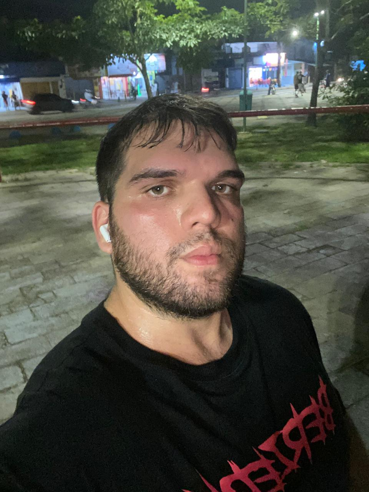

Isack Otavio
Informações de contato;
Telefone : (81) 99267-1869
Email:isackotavio26@gmail.com
Linkedln:https://www.linkedin.com/in/isack-souza-050274240/
Formação Acadêmica
-
Bacharelado em Administração
Uninassau (2018-2025)
-
Tecnólogo em Análise e Desenvolvimento de Sistemas
Faculdade Senac PE (2025-2027)
Cursos Complementares
-
Inglês Básico
NEL (Núcleo de Estudo de Línguas) - 2019
-
Informática Básica Cecine UFPE - 2022
• Pacote Office
• Sistemas Operacionais
• Redes de Computadores
-
Curso de Python - Cisco Academy - 2025
• Python 1
• Python 2
Habilidades
- Proativo
- Trabalho em equipe
- Atendimento ao público
Experiências Profissionais
Assistente Administrativo- Cantina Star
2015-2016
--Operador de caixa
--Auxiliar de Estoque
Estagiario Administrativo-Secretaria de educação e Esporte de Pernambuco
2022-2024
--Auxiliar no atendimento ao Público interno e
externo
-- Dar apoio na elaboração e preenchimento de
planilhas em geral
--Auxiliar na apresentação de relatórios
-- Realizar na digitalização e organização de
documentos;
Estágio - Contas médicas/RH - Clínica
NINHO - 07/2024 - 12/2024
--controle de jornada, cadastro de
colaboradores no sistema
--auxiliar as intercorrências dos
colaboradores para gerência
--Auxiliar no atendimento e recebimento
de matérias de expediente.
/ Contas medicas
--Auxiliar na conferencia relatórios das
evoluções clinica.
-- Auxiliar na cobrança de evoluções clínica,Auxiliar na coleta de assinatura,
-- Auxiliar nas rotinas administrativas sob
supervisão.
--Auxiliar na coleta de assinatura.
Objetivo
Atualmente em transição de carreira da área administrativa para a área de tecnologia, busco uma oportunidade que me permita aplicar meus conhecimentos adquiridos em cursos e projetos práticos, ao mesmo tempo em que continuo me desenvolvendo profissionalmente. Tenho grande interesse em atuar com desenvolvimento de sistemas, análise de dados ou suporte técnico, contribuindo com comprometimento, organização e vontade de aprender.